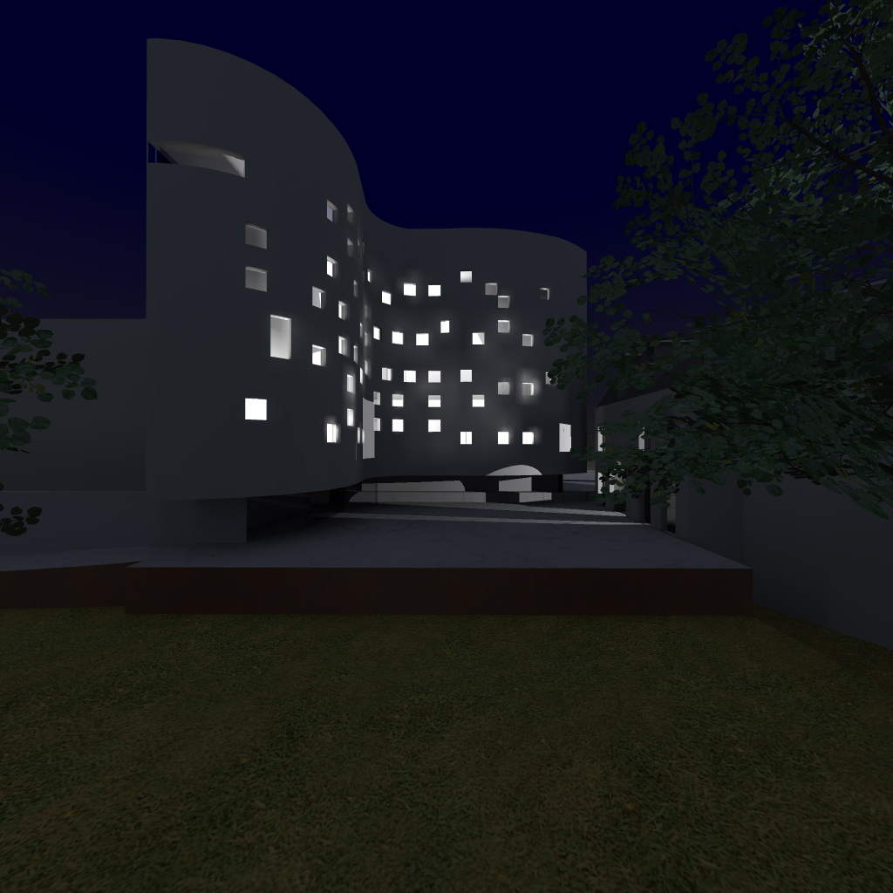
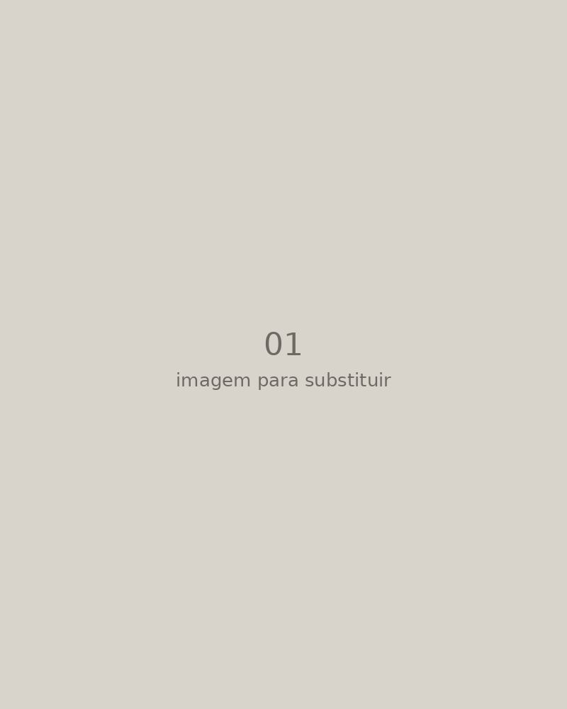
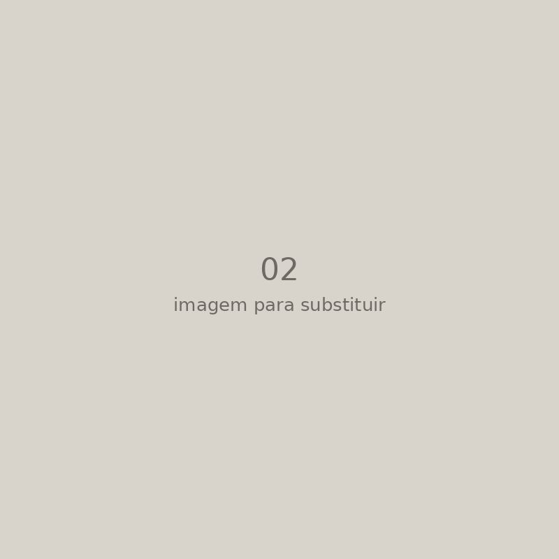
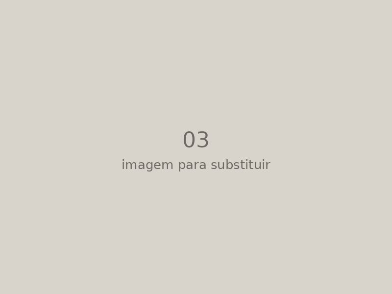
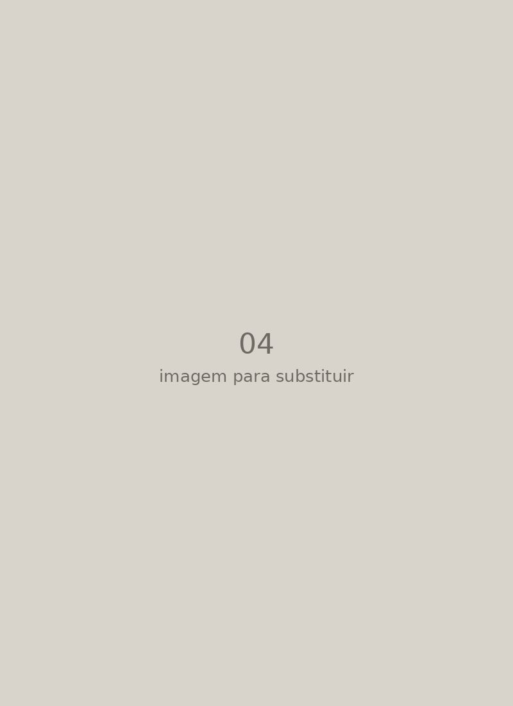
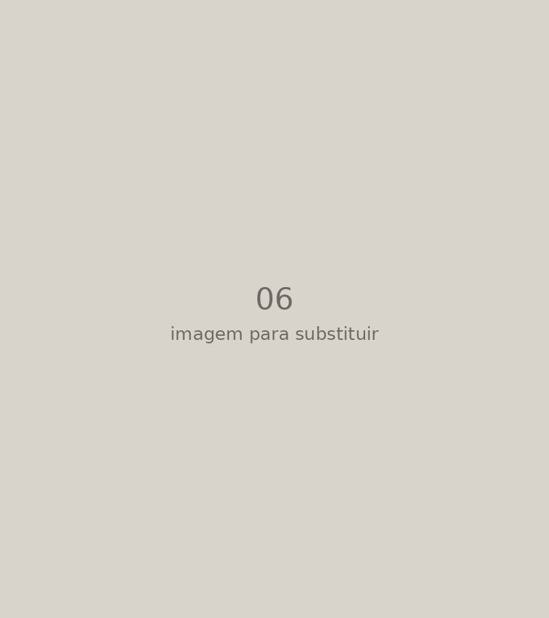
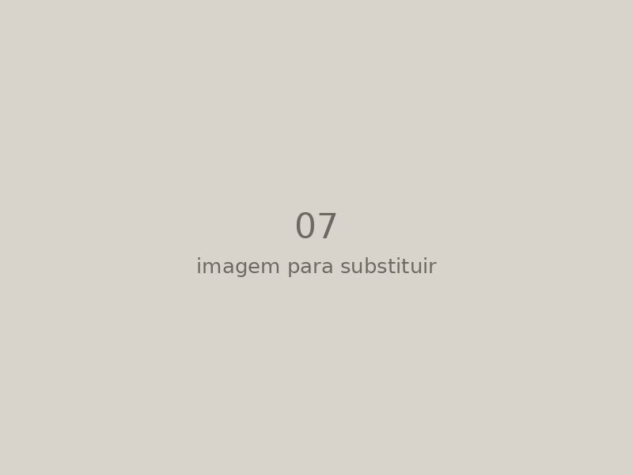
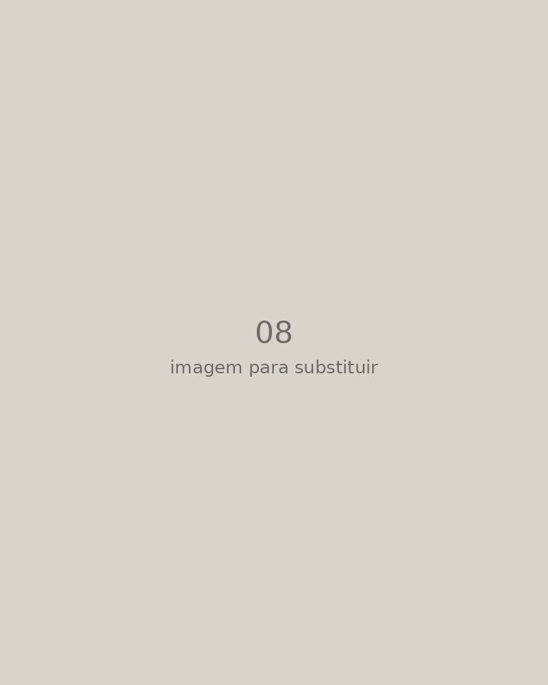
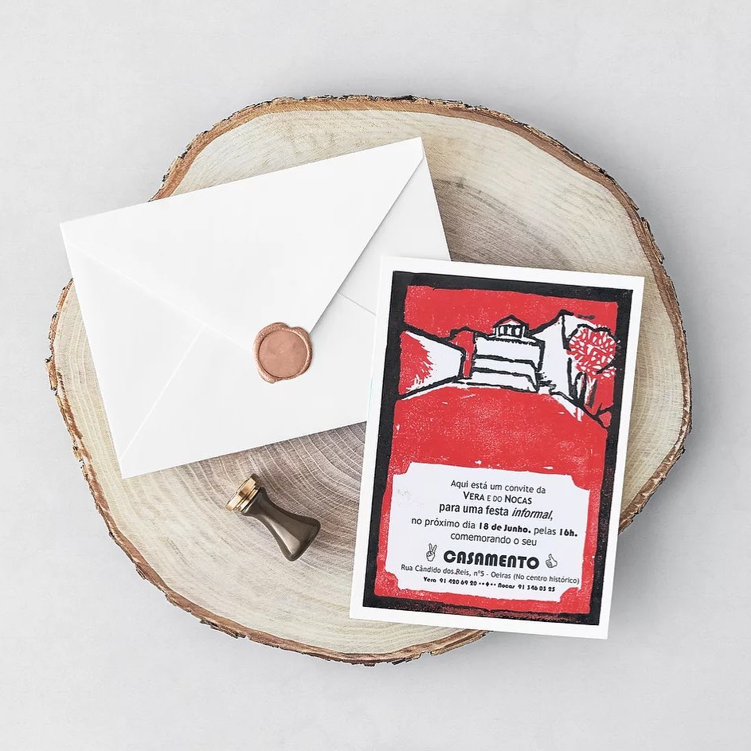
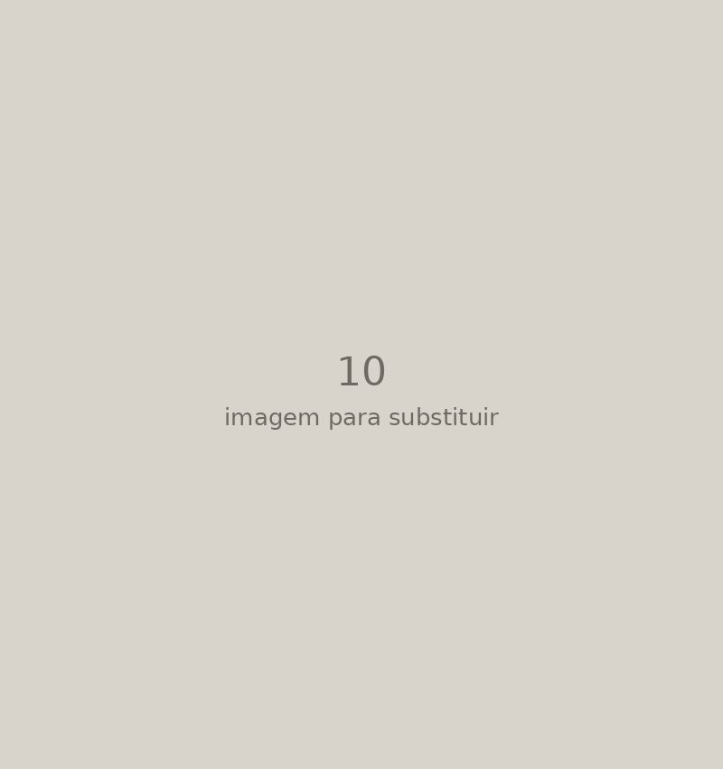

Arquitectura
Concebemos, transformamos e valorizamos espaços.
Desenvolvemos projectos de arquitectura e design de espaços, abrangendo desde a concepção de edifícios e espaços interiores à remodelação, reabilitação e decoração de espaços existentes.
Cada projecto é pensado à medida das necessidades e expectativas de quem nos procura. Através de uma abordagem integrada, conciliamos criatividade, funcionalidade e rigor técnico, procurando tirar o melhor partido de cada espaço, respeitando a sua identidade, o seu contexto e a sua finalidade.
Acompanhamos cada desafio desde a ideia inicial até à definição das soluções, com especial atenção à qualidade arquitectónica, à escolha dos materiais, à organização dos espaços e ao detalhe.
Os nossos serviços
01. Arquitectura de Edifícios
Desenvolvimento de projectos de arquitectura para construção nova, ampliação, reabilitação e alteração de edifícios. Desde os estudos iniciais à definição das soluções arquitectónicas, procuramos responder às necessidades funcionais, técnicas e estéticas de cada projecto.
02. Arquitectura de Interiores
Concepção e desenvolvimento de projectos de espaços interiores, residenciais, comerciais e empresariais. Trabalhamos a organização espacial, a funcionalidade, a iluminação, os materiais e os acabamentos, criando ambientes coerentes com a sua utilização e identidade.
03. Decoração
Criação e composição de ambientes através da selecção de mobiliário, peças decorativas, materiais, revestimentos, cores, tecidos e iluminação. Desenvolvemos soluções personalizadas que valorizam os espaços e lhes conferem carácter, conforto e harmonia.
04. Remodelação e Reabilitação
Transformação e renovação de espaços existentes, adaptando-os a novas necessidades e formas de utilização. Desenvolvemos soluções que optimizam a funcionalidade, renovam a imagem e valorizam o espaço, respeitando as suas características e potencialidades.
Uma abordagem à medida de cada projecto
Cada projecto tem necessidades e desafios próprios. Por isso, disponibilizamos serviços que podem ser desenvolvidos de forma autónoma ou integrada, ajustando o âmbito da nossa intervenção aos objectivos e às necessidades de cada cliente.
Desde uma intervenção pontual de decoração à concepção e transformação integral de edifícios e espaços, procuramos encontrar soluções que acrescentem valor, qualidade e identidade a cada projecto.

Portfolio









À medida
No cinco atelier, acreditamos que cada projecto pode ter uma dimensão e um grau de acompanhamento diferentes.
Por isso, disponibilizamos desde pequenas consultas de aconselhamento e orientação, para quem procura apenas uma opinião especializada ou ajuda na tomada de decisões, até serviços completos chave na mão, em que assumimos o desenvolvimento e acompanhamento global do projecto.
Do aconselhamento pontual à concretização integral de um espaço, adaptamos o nosso serviço às necessidades de cada cliente.
Consultadoria
à distância
Através da nossa consultadoria à distância, é possível obter aconselhamento profissional sem necessidade de acompanhamento presencial.
Analisamos cada situação de forma personalizada e ajudamos a encontrar soluções para layout, materiais, cores, iluminação, mobiliário, decoração e reformulação de espaços, adaptando o serviço às necessidades concretas de cada cliente.
Empresas,
marcas e eventos
Na área empresarial e comercial, desenvolvemos projectos de store design e espaços corporativos, criando ambientes que traduzem a identidade e os valores de cada marca ou empresa.
Concebemos igualmente projectos espaciais para eventos, desde o conceito e organização do espaço à sua linguagem visual e experiência.
A estas áreas juntamos o design de comunicação associado aos projectos, criando identidades e elementos gráficos que permitem construir uma linguagem visual coerente entre o espaço, a marca e a sua comunicação.
Formação
O cinco atelier dedica-se ainda à formação, através de workshops e cursos à distância nas áreas da arquitectura, interiores, decoração, design de espaços e comunicação.
Partilhamos conhecimento e ferramentas práticas com profissionais, estudantes e todos aqueles que procuram aprofundar estas áreas.
Uma forma
de trabalhar
Mais do que projectar espaços, procuramos criar lugares com identidade, propósito e carácter, oferecendo uma abordagem flexível e próxima, que se adapta a cada pessoa, projecto ou negócio.
Desde uma pequena decisão que precisa de orientação até à concretização integral de um espaço, chave na mão.